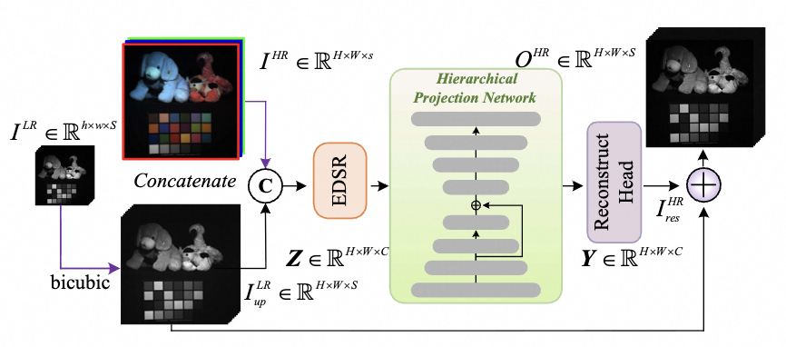
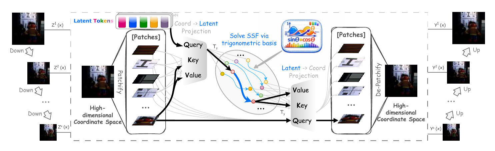
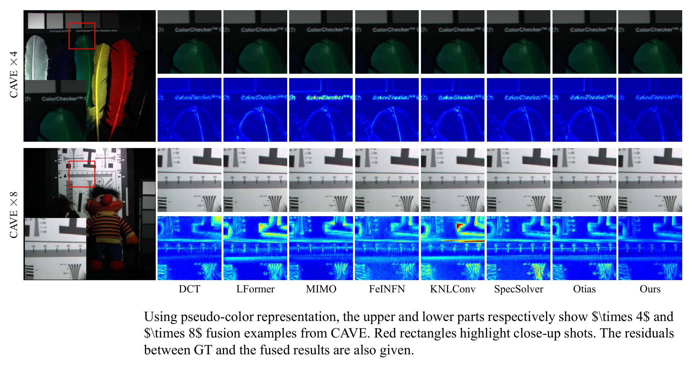
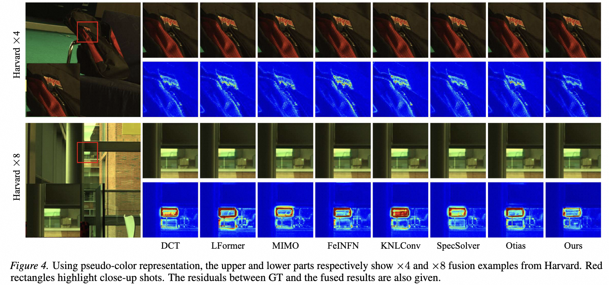
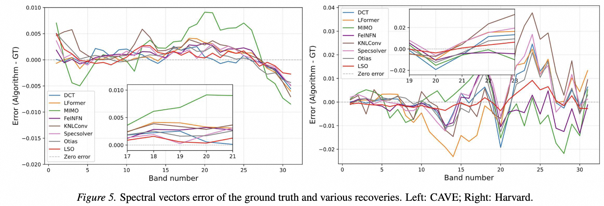
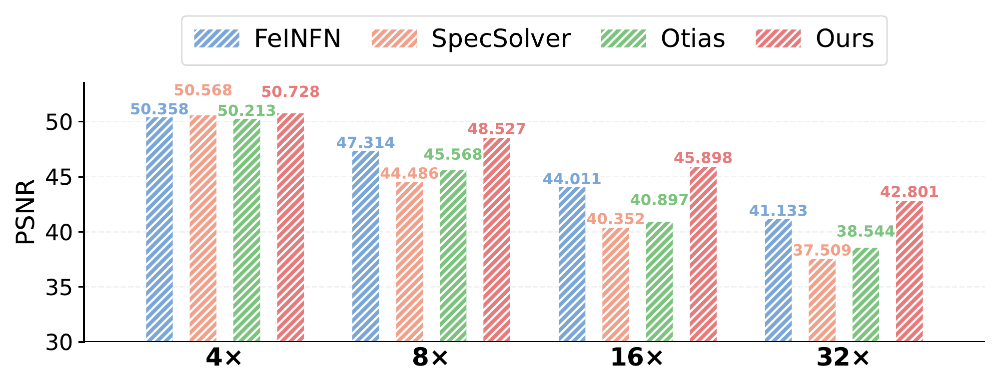
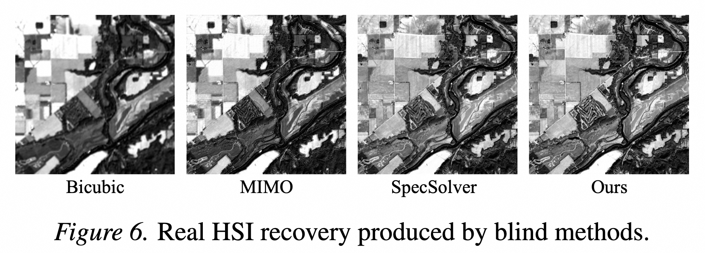
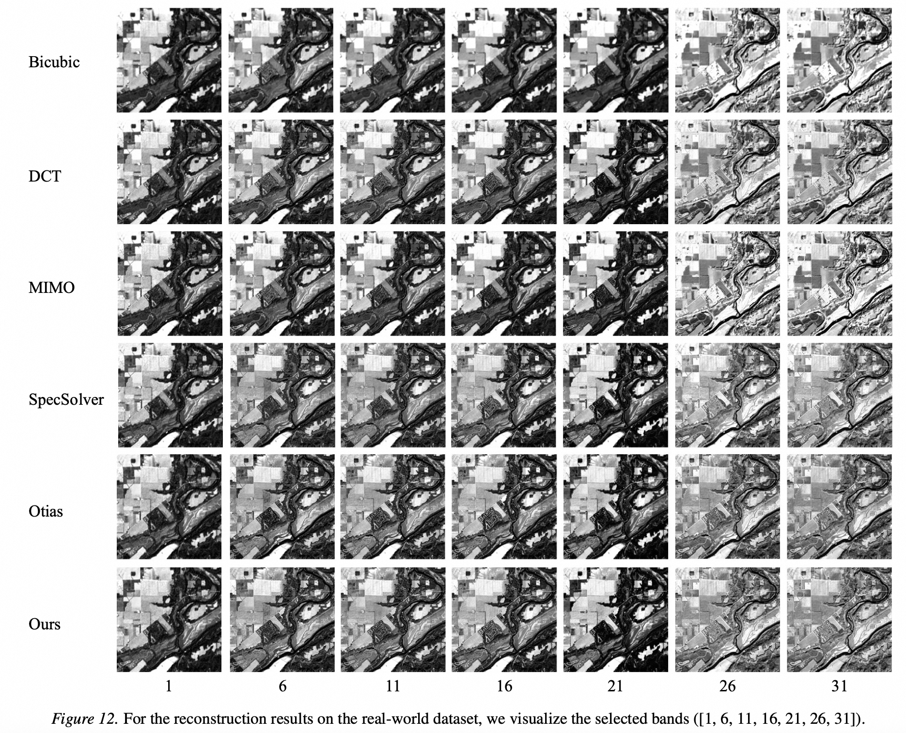

College of Computer Science and Technology, Zhejiang University of Technology, Hangzhou ·
Zhejiang Key Laboratory of Visual Information Intelligent Processing
*Corresponding author: zjw@zjut.edu.cn
LSO learns spatial–spectral fusion as a mapping between spectral functions in a compact latent space — projected via cross-attention with spectral prompts and solved by a trigonometric basis solver.
Existing deep spatial–spectral fusion methods learn the fusion mapping directly in the coordinate domain with convolutions and attentions. They are tied to a single spatial resolution and provide limited control over the frequency content of reconstructions, often producing severe spectral distortion. LSO instead treats fusion as an operator between spectral functions, learned in a compact latent space.
Convolution and attention bake spatial coordinates into the operator, hurting scale transfer across ×4, ×8, ×16, and ×32.
Without an explicit frequency parameterization, networks cannot expose a clean capacity–stability trade-off for multi-frequency content.
Band-wise reconstruction error rises in narrow spectral regions, undermining downstream HSI analysis tasks.
LSO compresses high-dimensional spatial–spectral observations into a compact latent representation through a cross-attention projection, where learned latent tokens act as spectral prompts. A hierarchical, patch-based architecture aggregates rich multi-scale cues before a structured operator solves the latent fusion mapping.

The spatial domain and the latent spectral domain are bridged by two complementary projections. CoordToLatent uses cross-attention against learned spectral prompts to compress high-resolution observations into a fixed-size latent. The Solver applies a trigonometric basis expansion to the latent code, which naturally supports multi-frequency modeling with a capacity–stability trade-off governed by the number of basis functions. Finally, LatentToCoord projects the solved latent back to the coordinate domain to produce the fused HSI.

Solve(z) = z + γ + Σq αq·sin(q·z) + Σq βq·cos(q·z)
The number of basis terms q controls capacity: more terms increase expressivity, fewer terms improve stability. This trade-off is supported by the theoretical analysis in the paper.
LSO is evaluated against eight competitive baselines on the CAVE and Harvard benchmarks at ×4 and ×8 magnification. Mean values from the paper are shown: PSNR is higher better, while SAM and ERGAS are lower better.
| Method | Params | FLOPs | PSNR ↑ | SAM ↓ | ERGAS ↓ |
|---|---|---|---|---|---|
| Bicubic | - | - | 31.175 | 4.683 | 9.629 |
| DCT | 8.15 | 2457.43 | 50.196 | 2.486 | 1.198 |
| LFormer | 2.28 | 306.94 | 49.847 | 2.584 | 1.313 |
| MIMO | 4.98 | 49.08 | 50.101 | 2.767 | 1.237 |
| FeINFN | 3.17 | 382.72 | 50.358 | 2.537 | 1.210 |
| KNLConv | 1.73 | 114.04 | 48.570 | 2.790 | 1.557 |
| SpecSolver | 3.10 | 364.75 | 50.568 | 2.489 | 1.212 |
| Otias | 2.99 | 278.35 | 50.213 | 2.538 | 1.211 |
| Ours (LSO) | 1.94 | 222.85 | 50.728 | 2.381 | 1.170 |
| Method | Params | FLOPs | PSNR ↑ | SAM ↓ | ERGAS ↓ |
|---|---|---|---|---|---|
| Bicubic | - | - | 27.383 | 6.449 | 14.349 |
| DCT | 8.15 | 2457.43 | 47.441 | 3.164 | 1.791 |
| LFormer | 2.28 | 306.94 | 47.302 | 3.474 | 1.813 |
| MIMO | 4.98 | 49.08 | 47.442 | 3.985 | 1.758 |
| FeINFN | 3.17 | 382.72 | 47.476 | 3.565 | 1.755 |
| KNLConv | 1.73 | 114.04 | 46.150 | 3.639 | 1.989 |
| SpecSolver | 3.10 | 364.75 | 47.831 | 3.527 | 1.805 |
| Otias | 2.99 | 278.35 | 47.769 | 3.201 | 1.757 |
| Ours (LSO) | 1.94 | 222.85 | 48.118 | 2.961 | 1.675 |
| Method | Params | FLOPs | PSNR ↑ | SAM ↓ | ERGAS ↓ |
|---|---|---|---|---|---|
| Bicubic | - | - | 37.173 | 2.645 | 5.445 |
| DCT | 8.15 | 2457.43 | 49.068 | 2.163 | 1.756 |
| LFormer | 2.28 | 306.94 | 48.938 | 2.182 | 1.706 |
| MIMO | 4.98 | 49.08 | 49.019 | 2.179 | 1.688 |
| FeINFN | 3.17 | 382.72 | 49.001 | 2.155 | 1.683 |
| KNLConv | 1.73 | 114.04 | 48.536 | 2.203 | 1.940 |
| SpecSolver | 3.10 | 364.75 | 48.919 | 2.169 | 1.771 |
| Otias | 2.99 | 278.35 | 49.046 | 2.151 | 1.728 |
| Ours (LSO) | 1.94 | 222.85 | 49.182 | 2.144 | 1.658 |
| Method | Params | FLOPs | PSNR ↑ | SAM ↓ | ERGAS ↓ |
|---|---|---|---|---|---|
| Bicubic | - | - | 34.051 | 3.186 | 7.587 |
| DCT | 8.15 | 2457.43 | 47.836 | 2.578 | 2.088 |
| LFormer | 2.28 | 306.94 | 46.651 | 2.742 | 2.305 |
| MIMO | 4.98 | 49.08 | 47.839 | 2.475 | 1.958 |
| FeINFN | 3.17 | 382.72 | 47.833 | 2.466 | 1.933 |
| KNLConv | 1.73 | 114.04 | 46.706 | 2.588 | 2.487 |
| SpecSolver | 3.10 | 364.75 | 47.652 | 2.533 | 2.052 |
| Otias | 2.99 | 278.35 | 47.848 | 2.459 | 1.907 |
| Ours (LSO) | 1.94 | 222.85 | 47.957 | 2.438 | 1.879 |



LSO is significantly more compact than most competitors while still being state-of-the-art on every metric. The latent operator design keeps the parameter budget below 2 M without sacrificing reconstruction quality.
Decoupling features from the coordinate space lets the operator transfer across spatial resolutions. Trained on CAVE at ×4, LSO maintains stable PSNR when tested at ×8, ×16, and ×32 — substantially reducing the resolution-induced degradation observed in coordinate-domain baselines.

On real hyperspectral acquisitions, LSO produces the sharpest reconstructions with the fewest spectral artifacts, confirming that the latent operator generalizes beyond simulated degradations.


Wei Li, Jieyuan Pei, Junnan Xu, Xuanfeng Ding, Junwei Zhu, Wanjun Chen, and Jianwei Zheng. Zhejiang University of Technology. Correspondence: Jianwei Zheng (zjw@zjut.edu.cn).
@inproceedings{lso2026,
title = {Solving Spatial-Spectral Fusion with Latent Spectral Operators},
author = {Li, Wei and Pei, Jieyuan and Xu, Junnan and Ding, Xuanfeng and Zhu, Junwei and Chen, Wanjun and Zheng, Jianwei},
booktitle = {Proceedings of the 43rd International Conference on Machine Learning},
series = {Proceedings of Machine Learning Research},
publisher = {PMLR},
year = {2026}
}